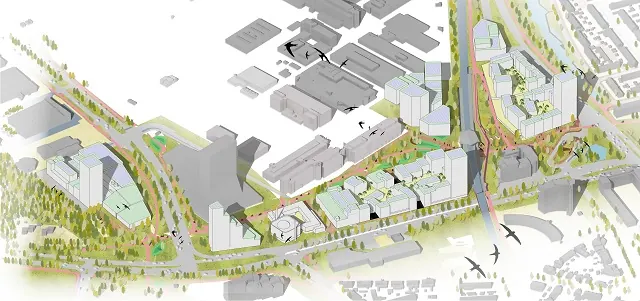

Nieuws ·
Nijmegen bouwt verder aan haar toekomst: nieuw bestemmingsplan Winkelsteeg Stationsomgeving Goffert

Dit bericht uit ons archief verscheen op 8 maart 2023 op NieuwsNijmegen.nl. Data, tijden en prijzen kunnen inmiddels anders zijn.
Stationsomgeving Goffert is één van de eerste werk- en woongebieden van Winkelsteeg, naast NDW21, die Nijmegen gaat ontwikkelen. Door het verleggen van rijbanen van de Graafseweg en de Neerbosscheweg ter hoogte van Station Goffert is er ruimte voor ruim 1.200 woningen, 100 short-stay eenheden, bedrijven, detailhandel, horeca en een ov-plein voor bussen. Ook komt aan het Jonkerbosplein een islamitisch cultureel centrum met moskee. Op de plek van de Jan Massinkhal komt een nieuw overdekt zwembad met sporthal. Het ontwerp bestemmingsplan Winkelsteeg Stationsomgeving Goffert is klaar en gaat ter inzage.
Modern stedelijk karakter
Het gebied krijgt een modern, stedelijk karakter met appartementen. Er komen woongebouwen van verschillende hoogtes. De woningen zijn voor moderne stadsmensen, denk aan studenten, starters en jongere expats (mensen uit het buitenland die hier tijdelijk werken). Voor deze groepen zien we kansen voor het versterken van werkgelegenheid in research en development op het gebied van Health & High Tech. Dat kan bij Noviotech Campus zijn, maar ook bij initiatieven op Health & High Tech die in de Stationsomgeving komen.
Noël Vergunst, wethouder Stedelijke ontwikkeling: “Ik ben enthousiast. Dit bestemmingsplan biedt de mogelijkheid dat de stationsomgeving Goffert zich ontwikkelt tot een gebied waar werken én wonen samenkomen. We dragen bij aan het versterken van de Health & High Tech sector. Zo kan dit gebied van Winkelsteeg zich kwalitatief en duurzaam verder gaan ontwikkelen. ”
Nijmegen wil de komende twintig jaar 10.000 woningen bouwen binnen de stadsgrenzen en zorgen voor 10.000 extra banen. Winkelsteeg speelt een belangrijke rol in deze wens. De ontwikkeling van Winkelsteeg moet ook zorgen voor een betere verbinding van de stadwijken Dukenburg en Lindenholt met de rest van Nijmegen.
Betaalbare woningen
Betaalbare woningen en goede bereikbaarheid is het uitgangspunt in de plannen. Het woonprogramma richt zich op appartementen in het betaalbare segment waaronder een groot deel sociaal.
Aandacht voor lopen, fietsen en ov
Om de plannen te kunnen realiseren, worden ter hoogte van het NS-station Goffert de rijbanen van de Graafseweg en van de Neerbosscheweg tegen elkaar aan gelegd waardoor er ruimte ontstaat voor de nieuwe ontwikkelingen. De ligging direct naast Station Goffert wordt beter gebruikt waardoor in de toekomst de auto minder nodig zal zijn. Parkeren kan vooral in parkeerhubs waar men makkelijk kan overstappen van een auto naar het OV, fiets of deelvervoer. Zo maken we zo goed mogelijk gebruik van de ruimte die er is. Bij station Goffert ontstaat er een nieuw stationsplein en een ov-plein voor bussen. Ook komen hier veilige voet- en fietspaden naar de omliggende wijken en richting het Goffertpark. De bedrijven van Noviotech Campus krijgen een fijne omgeving.
Wat gaat ter inzage?
Tegelijkertijd met het ontwerp bestemmingsplan Winkelsteeg Stationsomgeving Goffert worden het Ontwerpfacetbestemmingsplan Geluidzone Winkelsteeg (voor de gedeeltelijke verkleining van het geluidgezoneerd terrein en de bijbehorende geluidzone), het Ontwerpbeeldkwaliteitsplan Winkelsteeg Stationsomgeving Goffert en het ontwerp Hogere waardenbesluit ter inzage gelegd.
Ter voorbereiding op dit bestemmingsplan heeft de gemeente met diverse bedrijven, eigenaren, gebruikers van percelen in het bestemmingsplangebied en belangstellenden gesproken over de plannen.
Inloopbijeenkomst 21 en 30 maart 2023
Op 21 en 30 maart organiseren we inloopbijeenkomsten voor bedrijven, omwonenden en belangstellenden over de plannen voor de Stationsomgeving Goffert. Betrokkenen ontvangen hiervoor een uitnodiging.
Ter inzage
Van donderdag 9 maart tot en met woensdag 19 april 2023 ligt het ontwerpbestemmingsplan met bijbehorende stukken tijdens kantooruren op de volgende locaties ter inzage bij:
- Gemeente Nijmegen (Stadswinkel), Mariënburg 30, Nijmegen, tel. 14 024.
- Steunpunt Stadswinkel Dukenburg, Meijhorst 7039, Nijmegen, tel. 14 024.
Het digitale bestemmingsplan is vanaf donderdag 9 maart 2023 ook te zien op de landelijke website: http://www.ruimtelijkeplannen.nl
Vervolg
Na afloop van deze periode verwerkt de gemeente de mogelijke zienswijzen in een nota van beantwoording. De stukken worden vervolgens ter vaststelling aan het college van B en W en de gemeenteraad aangeboden. De raad neemt rond zomer 2023 een besluit over de plannen.
Meer informatie
Kijk dan op nijmegen.nl/winkelsteeg voor de actuele status van de verschillende projecten in het gebied. Ook kunt u contact opnemen via winkelsteeg@nijmegen.nl.